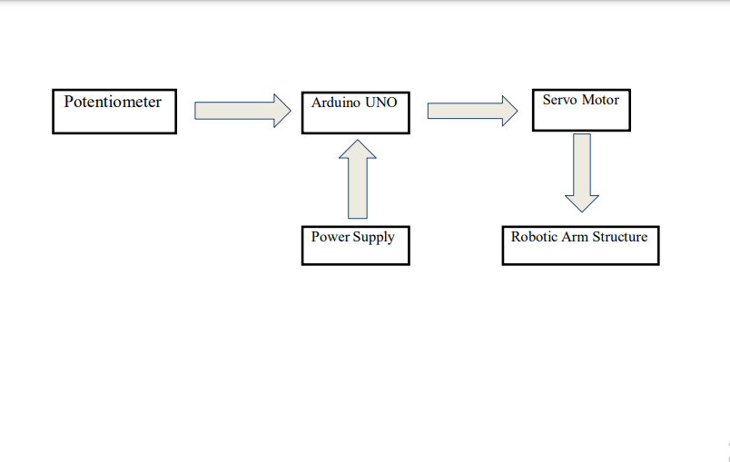

PBL Project
Robotic Arm Using Potentiometer
shantanu
Robotic Arm Using Potentiometer
15

This project aims to develop a robotic arm using Arduino Uno microcontroller for tasks like pick-and-place operations, object manipulation, and simple assembly. It focuses on optimizing the mechanical design for efficient operation and developing a precise control system. The arm's mechanical design includes carefully selecting servo motors as joints, along with appropriate linkages and end effectors, enabling a wide range of motion. The control system, utilizing Arduino Uno, employs sensor feedback and kinematic algorithms for precise arm movements. Real-time coordination and feedback are facilitated through communication between the Arduino Uno board, servo motors, and sensors. A user interface is developed to provide intuitive control and monitoring accessible through a computer or mobile device, offering feedback on position, speed, and forces.
Extensive testing ensures reliability and accuracy, evaluating performance metrics such as positioning precision, payload capacity, and response time. Overall, this project contributes to robotics research by presenting a versatile and user-friendly robotic arm, integrating mechanical design, control system development, and user interface integration.
Components Used
1. Arduino UNO
2. Servo Motor
3. Potentiometer
4. Jumper Wire
5. BreadBoard
6. Acrylic Sheet
Conclusion
We have developed a Robotic Arm by taking input from potentiometer and applying it to servo motors to make structure move. Robotic arm is fully functional and is able to pick up, displace and drop any object as controlled manually.
This Project was made by:
1. Rohan Addunage
2. Shantanu Agarkar
3. Shubham Biradar

Related Pbl Projects
Robotic Arm
automatic car